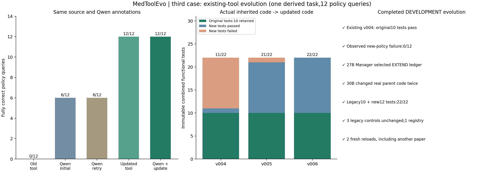

开发级完整验收通过，时间：北京时间2026-11-09 20:23:01。Qwen3.5-27B负责标注、Executor、Manager、契约和审核；Qwen3-Coder-30B负责实际代码扩展和修复。没有训练模型权重，没有人工修改候选函数。
沿用此前已经存在、原10项测试通过的evidence_ledger v004。面对新的关系合取、析取、显式正负事实、排除及证据作用范围要求，旧工具只返回并集，实际12个查询0/12；Manager自主选择extend现有台账，Builder从真实父代码更新到v006，原10项回归一直保留，通过新旧22项测试后完成实际调用、开发注册和跨论文重载复用。
旧工具在原契约上正确；0/12反映新查询超出旧能力，不等于旧任务失败。父代码、旧测试及原注册文件均未改动，新版登记在本案例独立开发库。此处12个是同一个派生工程任务的条件索引请求，不是12道独立医学题，也不是BioASQ F1。

| 执行方式 | 完整查询通过 | 结果集合正确 |
| 原工具实际调用 | 0/12 | 0/12 |
| Qwen初始回答（同一标注＋旧工具观察） | 6/12 | 7/12 |
| Qwen同证据重试 | 6/12 | 7/12 |
| 更新工具实际调用 | 12/12 | 12/12 |
| Qwen读取更新工具输出 | 12/12 | 12/12 |
完整通过同时要求筛选结果、证据ID及顺序正确。初始5个查询的成员有误，另1个为证据记录错误；不是仅靠名称换写改善。所有组使用同一份Qwen源关系标注，未给工具组单独补充医学事实。该单例、单一配置结果不构成总体统计收益或临床正确性证明。
| 实际版本 | 原10项回归 | 新12项测试通过 | 组合测试 |
| v004 | 10/10 | 1/12 | 11/22 |
| v005 | 10/10 | 11/12 | 21/22 |
| v006 | 10/10 | 12/12 | 22/22 |
初始v004副本的代码SHA与既有父版本完全一致，并非人为制造的坏版本。v005完成主要扩展后还把仅有unknown事实的对象错误纳入“只排除某关系”的查询，独立测试拦截。第二次自动更新v006修复此问题。组合测试在首次代码更新前冻结，整个过程没有删改失败测试。
父代码SHA256：75b7c64645d3557e15ccd24db903939c1429e2027d8589ddefc818b2570a0a9f。
新版代码SHA256：0b75e1050a1af7ddb83f2639a77635a5ec4f00bb7dd4cf5bda716f2d71d8b679。
原10项测试SHA256：f8dccce35eb81b26198eb8b851e0e1051e68056b426efa795ffd17d575f56d1f。新组合测试SHA256：83eb5215f8d217cb1c19fd7b503e0e6a316ee2d2c4a649c483dec5c13334cdf8。
主来源为DocHopQA条目9400附带的PMC11837447正文：Accuracy of artificial intelligence in detecting tumor bone metastases: a systematic review and meta-analysis。复用来源为条目9532、PMC11856201：Efficacy and Safety of Celecoxib and a Korean SYSADOA (JOINS) for the Treatment of Knee Osteoarthritis: A Systematic Review and Meta-Analysis。
源XML原样保留。引用分组及区间展开是可信机械预处理；关系语义由Qwen标注，所有对照共享。研究者预先选择来源、定义关系词表、12个查询、规则与预设标签核验、独立参考程序及验收；这些人工介入已记录，不把本例称作原DocHopQA问题或开放域自主科学发现。Builder收到通用契约、实际父代码及虚构测试反馈，没有收到真实研究ID或参考查询结果。
查询只描述当前段落的引用索引：none_of表示排除存在某显式标注的对象，不证明某研究没有实施某操作；缺失不等于负事实。原文计数与字面引用区间可能不一致，本例不替作者纠正科学结论，也不把某引用出现当作临床证据充分。
| 查询 | 参考结果（源引用ID） | 初始Qwen完整通过 | 同标注重试 | 更新后 |
| q1 | CR37, CR51 | 是 | 是 | 是 |
| q2 | CR49, CR50 | 否 | 否 | 是 |
| q3 | CR39, CR40, CR46, CR53, CR56 | 否 | 否 | 是 |
| q4 | CR18, CR43, CR44, CR45 | 否 | 否 | 是 |
| q5 | CR39, CR46, CR53 | 是 | 是 | 是 |
| q6 | CR20, CR37, CR42 | 否 | 否 | 是 |
| q7 | CR37, CR50 | 是 | 是 | 是 |
| q8 | CR45 | 是 | 是 | 是 |
| q9 | CR18, CR40, CR43, CR44, CR45 | 否 | 否 | 是 |
| q10 | CR20, CR42 | 是 | 是 | 是 |
| q11 | 空集 | 是 | 是 | 是 |
| q12 | CR37, CR51 | 否 | 否 | 是 |
此前两条案例的已知问题继续保留，第三条通过不代表字符定位工具的残余缺陷已修复。三条案例仍为开发工程演示，均不替代原100题验收、不计入1130题正式结果；当前没有因此启动全量。